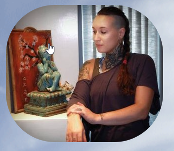

Traditional Chinese Medicine Practitioner since 2008

Lisa is TCM practitioner, Spiritual Life Coach, Elemental Energy Healer en Teacher in Esoteric Knowledge & Tribal Fusion Bellydance. Zij is auteur van het boek The Skeleton Key — Look inside & see... (ISBN: 9789402151213).
Sinds 2017 is Ravenstein (Noord-Brabant) haar thuis, waar zij vanuit Esoterisch Gezondheidscentrum San Zhong Yi patiënten en cliënten behandelt en begeleidt.
Lisa is een CPION SHO geaccrediteerde zorgverlener volgens de PLATO eindtermen sinds 15 oktober 2016.